Expenses
Expenses allows you to manage your expenses, trip budgets, advances and receipts. You can create and send your expenses for approval to your Reporting Manager. Expenses can be placed into various categories such as food, travel, entertainment etc.
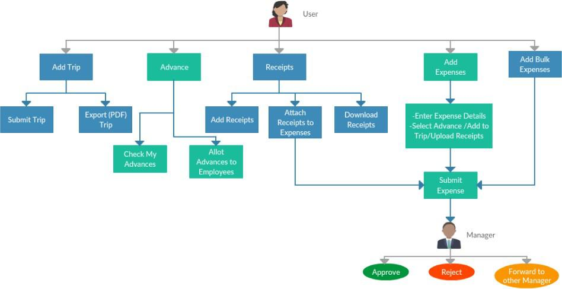
Process Description:
- User (Any user with a reporting manager) can add a new Trip
- User can submit the Trip for approval
- User can export the trip as an expense
- Advances
- User can check the advances allotted to him/her
- User can allot advances to employees reporting to him/her
- Receipts
- User can add/upload receipts
- User can attach receipts to expenses
- User can download existing receipts
- User can add expenses
- User will need to enter expense details
- User can select an advance amount/add the expense to a trip/upload receipts (optional)
- User can then submit his/her expense
- The user’s reporting manager receives the user’s expense request, he/she can:
- Approve the expense
- Reject the expense
- Forward the expense to another manager who can perform the actions on his/her behalf. (The other manager also has the same options i.e Approve/Reject/Forward)
Note: There is no limit on how many times an expense can be forwarded.
How do I add an Expense Category?
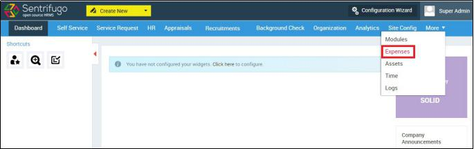
- Click Expenses in the top menu
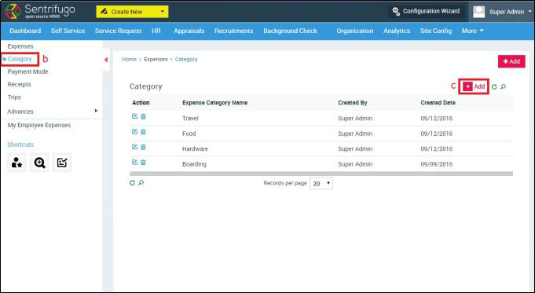
- Click Category on the left menu panel
- Click +Add button on the right side
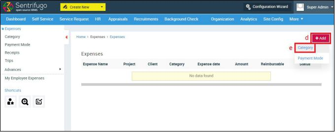
- Click +Add on the top right corner
- Select Category
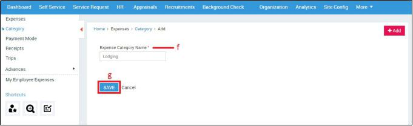
- Enter Category name
- Click SAVE button
How do I add a Payment Mode?
The method of payment for example: credit card, net banking, cash etc.

- Click Expenses in the top menu
- Click Payment Mode on the left menu panel
- Click +Add button on the right side
- Click +Add on the top right corner
- Select Payment Mode
- Enter Payment Mode name
- Click SAVE button
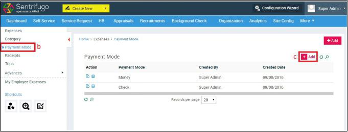
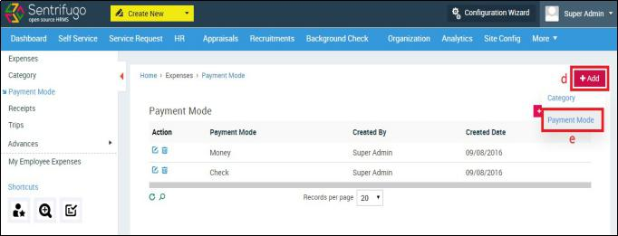
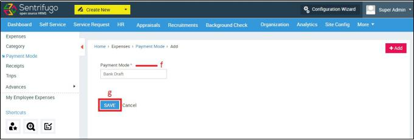
How do I add an Expense?
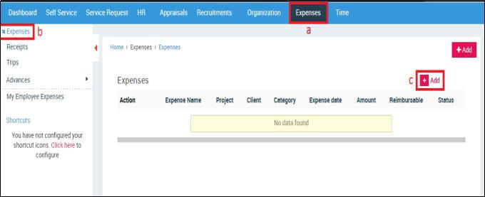
- Click Expenses in the top menu
- Click Expenses in the left menu panel
- Click +Add button on the right side
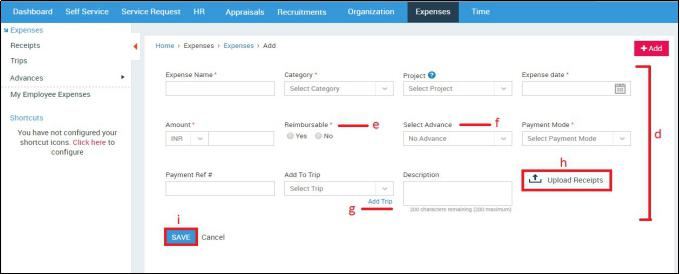
- Enter the required details
- Not functional in the current version
- Employers can pre-allocate a certain amount of money called Advance to an employee, which can be used for expenses incurred during trip(s) or for project(s) and client(s).
- Add Trips for managing multiple expenses, clients and projects. A Trip comprises of the various costs incurred in a trip like travel, food, and accommodation
- Upload Receipts to support your expenses
- Click SAVE button
How do I submit an Expense for approval?
You will need to create an Expense, before you can submit it.
- Click Expenses in the top menu
- Click Expenses in the left menu panel
- Click on the specific record to view the details.
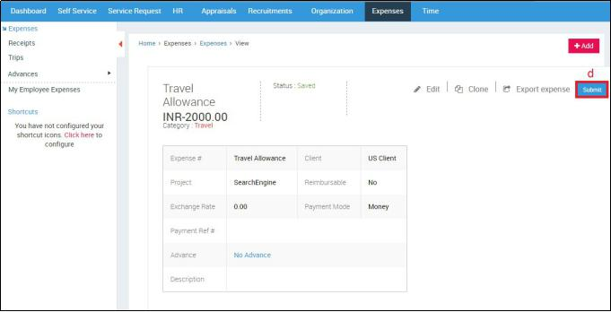
- Click Submit button
A confirmation message will be displayed.
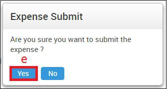
- Click Yes
How do I export an Expense?
You will need to create an Expense, before you can export it.
- Click Expenses in the top menu
- Click Expenses in the left menu panel
- Click on the specific record to view the details.
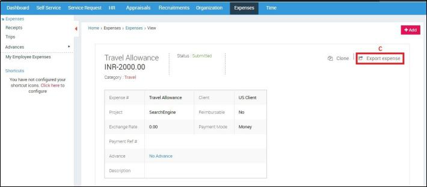
- Click Export Expense button
An expense report in PDF format will be downloaded.
How do I clone an Expense?
You can clone an expense if a new expense has similar details to the one you want to clone. It will save you the trouble from creating a new expense from scratch.
You will need to create an Expense, before you can clone it.
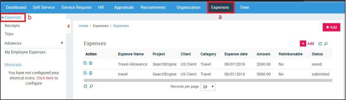
- Click Expenses in the top menu
- Click Expenses in the left menu panel
- Click on the record to view the expense details.
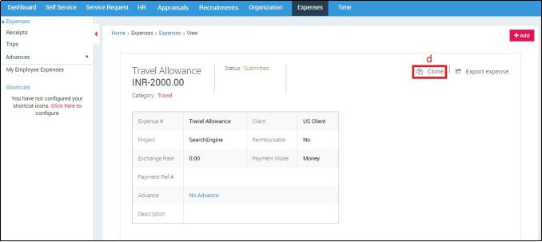
- Click Clone option
You will be redirected to the Add Expense screen. The details will be auto filled by default, you can edit the details.
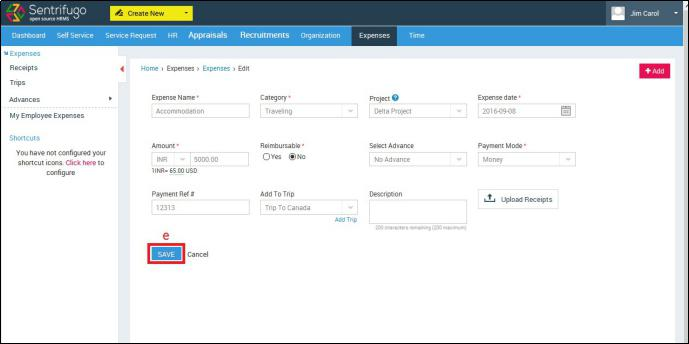
- Click SAVE button
How do I approve/reject Employee Expenses?
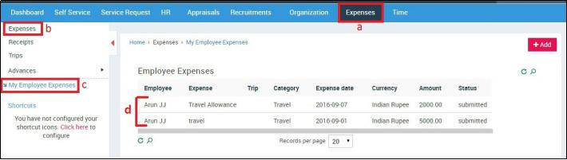
- Click Expenses in the top menu
- Click Expenses in the left menu panel
- Click on the desired record to view the details
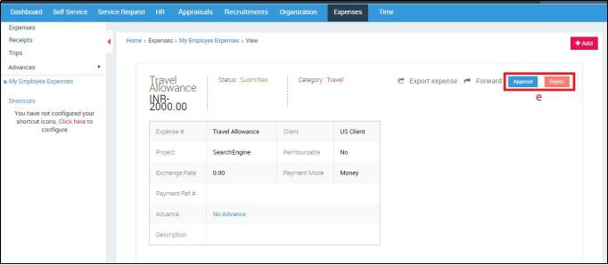
- Click Approve/Reject
A confirmation message will be displayed.
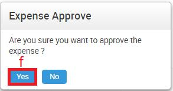
- Click Yes button
How do I forward an Expense to another Manager?
- Click Expenses in the top menu
- Click Expenses in the left menu panel
- Click My Employee Expenses in the submenu
- Click on the desired record to view details
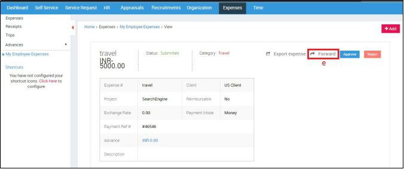
- Click Forward option
A small pop up window will open
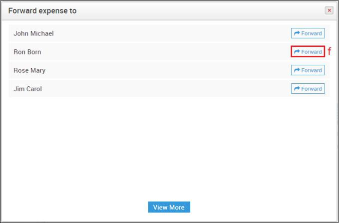
- Click Forward button against the Manager’s name to whom you want to forward the expense to
The other manager will receive an email notification informing him about the forwarded expense. He/she can Approve/Reject/Forward the expense.
How do I upload Receipts?
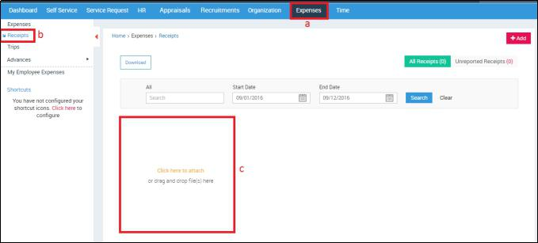
- Click Expenses in the top menu
- Click Expenses in the left menu panel
- Click here to upload receipts Or Drag and drop files here
How do I download my Receipts?
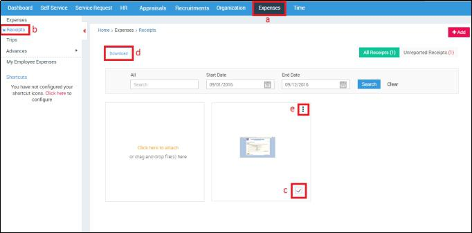
- Click Expenses in the top menu
- Click Expenses in the left menu panel
- Select the receipt you want to download
- Click Download button
Or
- Click More Action icon
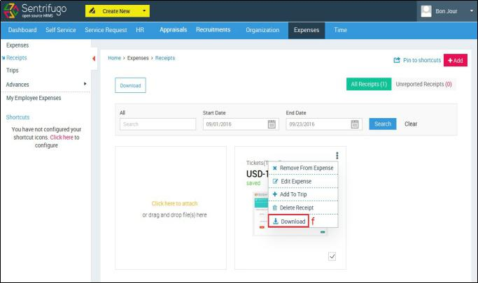
- Select Download
What are Unreported Receipts?
Receipts which haven’t been attached with any Expense or Trip are placed in the Unreported Receipts category.
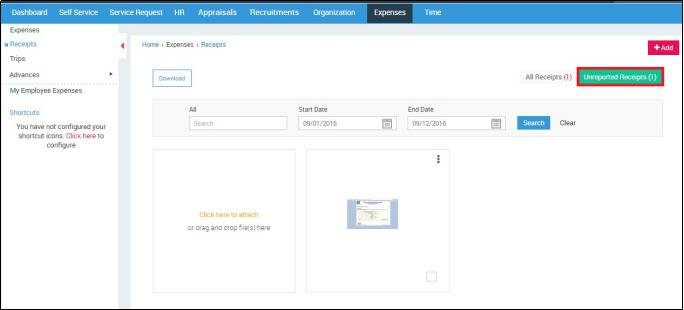
How do I add Receipts to Expenses/Trips?
To upload receipts while adding expenses, please refer How do I add an Expense?
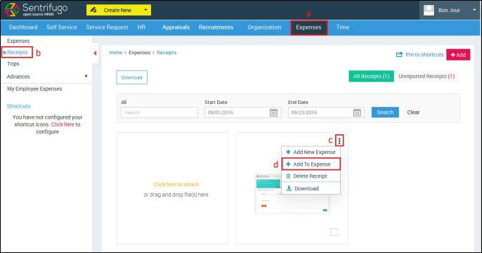
- Click Expenses in the top menu
- Click Receipts in the left menu panel
- Click More Actions icon
- Click Add to Expense
A small pop up window will open.
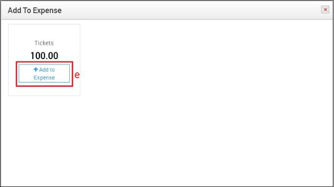
- Click Add to Expense
The below image shows the receipt has been added to an expense:
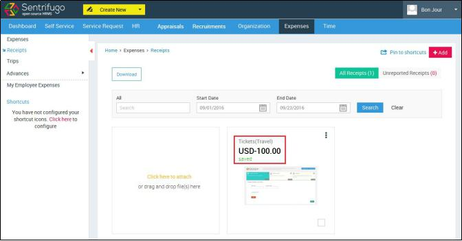

If you need to add a new expense after adding a receipt, then you can add expenses from Expenses > Receipts > Click on More Actions Button > Add New Expense.
How do I delete a Receipt?
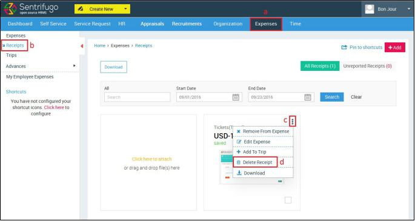
- Click Expenses in the top menu
- Click Receipts in the left menu panel
- Click More Actions icon
- Click Delete Receipt
A confirmation message will be displayed.
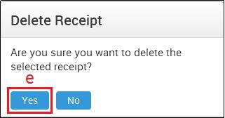
- Click Yes
How do I create a Trip?
Add Trips for managing multiple expenses, clients and projects. A Trip comprises of the various costs incurred in a trip like travel, food, and accommodation. This helps the managers to get an overview of the employee’s entire trip expense at one go.
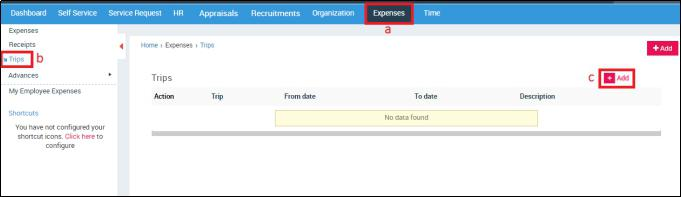
- Click Expenses in the top menu
- Click Trips in the left menu panel
- Click +Add button
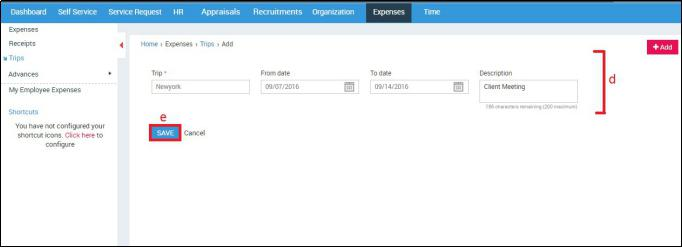
- Enter the required details
- Click SAVE button
How do I allot an Advance to an Employee?
Sentrifugo allows Manager to pre-allocate a certain amount of money called Advance to an employee, which can be used for expenses incurred during trip(s) or for project(s) and client(s).
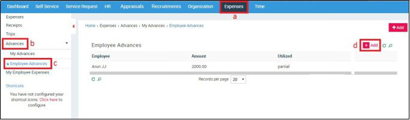
- Click Expenses in the top menu
- Click Advances in the left menu panel
- Click Employee Advances in the submenu
- Click +Add button
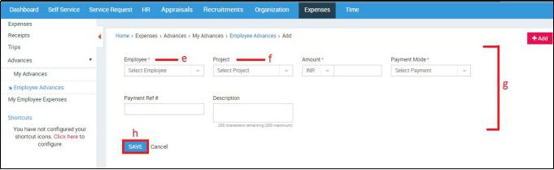
- Employees reporting to you will be populated in the drop down option
- The Employee’s projects will be populated here
- Enter the required details
- Click SAVE button
How do I view the Advance allotted to me?
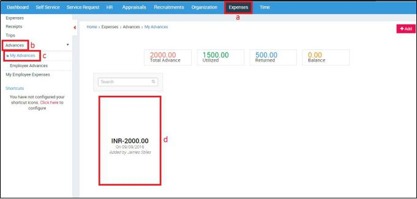
- Click Expenses in the top menu
- Click Advances in the left menu panel
- Click My Advances in the submenu
- You can view the advance amount and the person’s name who has allotted you the advance
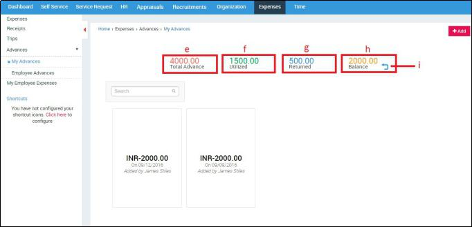
- Advance amount allotted to you
- Advance amount utilized by you
- Advance amount returned by you
- Balance Advance amount
- Click here to return Advance
A small pop up window will open.
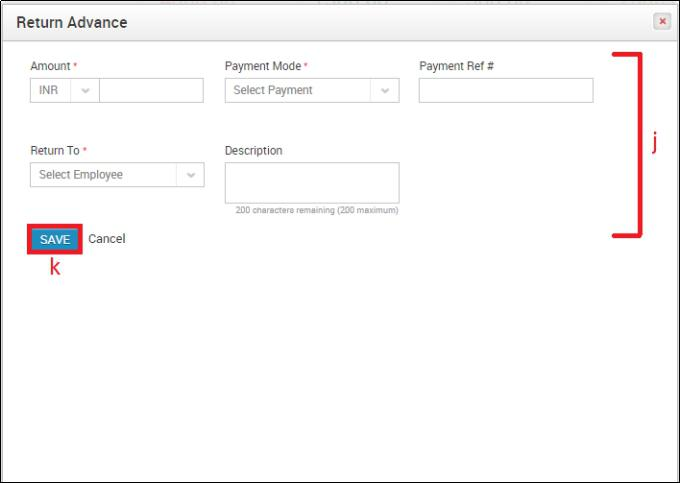
- Enter the required details
- Click SAVE button